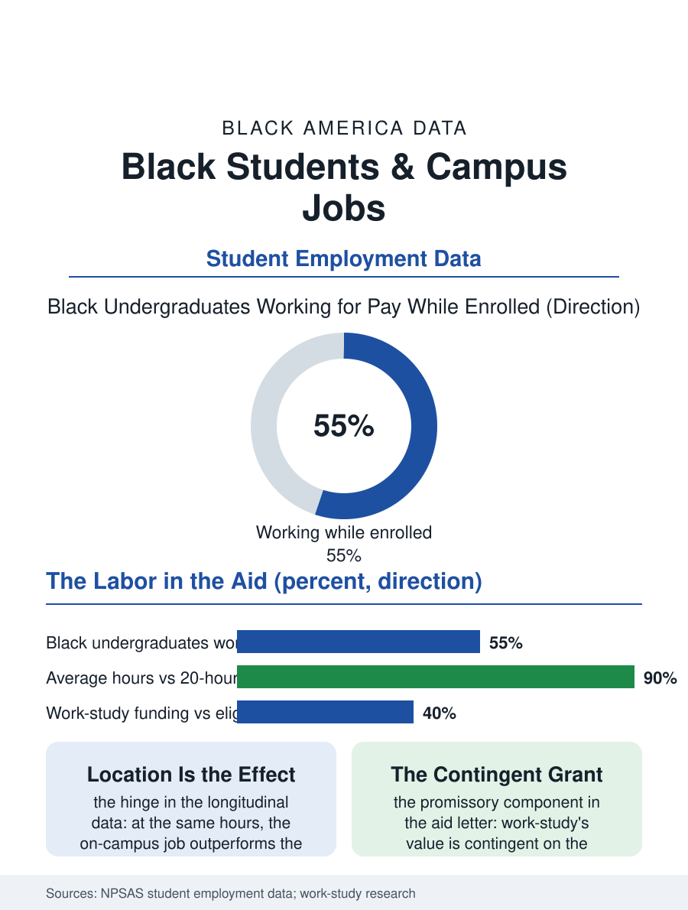

Black Education
The Wage Inside the Aid: Black Students and Campus Jobs
The aid package's one promissory component, whose location decides whether it builds belonging or merely pays. The campus jobs file.

Work-study and the campus job are the financial aid file's labor component: roughly a million students hold campus employment in the federal and institutional programs, Black students working at the highest rates and hours of any group while enrolled, in jobs that range from the career's first rung to the dining hall's shift, with the research drawing a bright line between the two kinds. This article reads the campus jobs file.
Hours and Their Threshold
The employment data of the enrolled give the file its base: the Black undergraduate works for pay at rates above the other groups', and works more hours at the same enrollment intensity, the necessity file's arithmetic of the aid gap and the family's contribution capacity, with the hours' effect on the grades and the completion following the research's consistent curve, benign to positive at the low band, the campus job's modest hours, and turning negative past the twenty-hour threshold the advisors cite, a threshold the Black student's average schedule presses against in the survey data's distribution. The job's location is the file's hinge: the on-campus job's effects run ahead of the off-campus job's at the same hours in the longitudinal studies, the supervisor who is a staff member, the schedule built around the examinations, the workplace inside the institution the student is trying to belong to, each a mechanism the retention literature names, so that the campus job's allocation is a retention policy disguised as a payroll, and its rationing, the work-study award's funding against the eligible pool, is a retention decision made in the aid office's budget. The summer's version of the file, the campus's summer staff and the student's decision to stay or go home, carries the housing file's weight inside the employment's, the summer job in the college town being for many the aid package's unlisted fourth component, and its loss in the pandemic's closed campuses was the file's stress test, recorded in the students' emergency grant applications of that year.
The Award and the Allocation
The federal work-study file's mechanics are the allocation's: the appropriation flows to the campuses by the formula's history more than by the current need's map, the award's size covering a fraction of the hours the student must work, the remainder found off campus at the file's worse terms, and the job's assignment within the campus, the library's desk against the laboratory's assistantship against the dining hall's line, distributing the career-relevant experience by the student's information and the department's networks in the pattern of the internship file's, the research assistantship being the graduate school's first credential and the dining shift being the wage's, both filed under the same program's name in the aid letter. The career services' reforms are the file's constructive tier: the campus job's redesign as the internship's internal form, the competencies named and supervised and transcripted, adopted by the campuses that read their own retention data and now spreading through the work-study directors' association as the program's modern standard.
The Wage Inside the Aid
The campus jobs file closes on the aid package's composition, because the work-study line in the award letter is the one component that arrives as a job rather than a grant, its value contingent on the hours the student's schedule survives, so that the package's generosity is partly a promissory note the student's calendar must honor, a design whose burden falls, in the hours data, on the student who can least afford the contingency. The states' and the campuses' experiments with converting the work expectation into the grant for the lowest-income tier are the file's policy frontier, priced against the retention effects the campus job's defenders cite, the argument being, in the data's own terms, about which of the job's goods, the wage or the belonging, the conversion keeps. The aid data count the awards each year. The file's last entry is the student closing the library at midnight, the wage in the aid package and the belonging in the building's quiet, the two goods in one shift, which is the campus job at its designed best and the standard the allocation's fairness will be measured by when the next award letters are printed.
More in Black Education
Black Educational Attainment: High School Parity, the College Gap
About 89 percent of Black adults hold a high school diploma and one in four holds a bachelor's degree or higher — the attainment ladder, the college completion gap, and the generational trend.
Historically Black Colleges and Universities: Enrollment and Degrees
More than 100 HBCUs enroll roughly 290,000 students and award about one in six Black bachelor's degrees — an outsized share from a small sector. The federal education data.
Black College Enrollment: 2.4 Million Students
About 2.4 million Black students are enrolled in American colleges — nearly two-thirds of them women. The NCES enrollment data by sector, level, and trend.
Source: National Postsecondary Student Aid Study employment data; Federal Work-Study program and campus employment research.